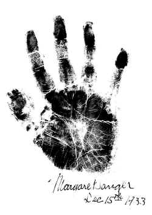

"Hands Up!"
 In 1933, Nellie Simmons Meier, a well-known palm reader from Indianapolis, wrote to Sanger to see if she could make an appointment to read the hands of the noted birth control reformer for an upcoming book on the hands of outstanding men and women in various fields. "This book," she wrote Sanger "goes down to posterity to show the famous hands who put into execution, the commands of their owners." (Nellie Simmons Meier to MS, Dec. 2, 1933 [LCM 9:550].) Meier called herself "a professional reader of character through scientific palmistry," and claimed to have read roughly 20,000 pairs of hands over 35 years. Indiana writer and American diplomat Meredith Nicholson wrote in the introduction to Meier's book of collected palm readings, Lions' Paws: The Story of Famous Hands [New York, 1937]: "She has made of palmistry something more than a fad, and I venture to say that no one has ever carried the study of it further or to a higher plane." Sanger, who periodically tested her faith in astrological readings and handwriting analysis, welcomed the opportunity to have Meier examine and take an impression of her hands. (Lions Paws, 18, 20)
Meier read Sanger's hands in January 1934. According to her book, she averaged twenty minutes with each subject, analyzing their handshake and palms and fingers before taking an ink impression. She wrote Sanger after their meeting, calling Sanger's small hands "wonderful exponents of that busy, active brain of yours." (Nellie Simmons Meier to MS, Jan. 11, 1934 [LCM 9:554] .)
Lions Paws, published in 1937, incorporated a little over 100 hand readings of reformers, politicians, artists, musicians, actors, writers, scientists and business leaders, including: Walt Disney ("his thumbs are double jointed, disclosing his liking for dramatic episodes and the ability to create them in life."); financier Otto Kahn ("square palm, the palm of a man of order and of method who recognizes authority and the need for discipline."); Susan B. Anthony ("...her heart line, forked at one end and running to the space between the first and second fingers showed idealism."); Booker T. Washington ("His head line indicated that his mentality was used in furthering one particular line of work, rather than diversified interests – a one-track mind."); George Gershwin ("His originality is shown in the rather spatulate development of the tip of his third finger, Apollo."); Amelia Earhart ("The length and breadth of her palm indicate her love of physical activity, and her long fingers show her carefulness in detail ensuring perfection as far as possible."); and Helen Hayes ("Her palms slope toward the wrist, the skin is satiny, of exceedingly fine texture, and these together with her nicely placed but rather short fingers, show quick, inspirational, mental grasp, such as she applies to her character delineations.") (Lions Paws, 155, 147, 150, 142, 101, 75, 35.)
Her analysis of Sanger's hands was one of the lengthiest in the book:
"As I looked at her palms I understood why she, of many women who had gone
through a similar experience, had begun her work. If you will look closely at
her hands you can see the circle of intuition in both, that is, the curve which
leads from under the mount of Mercury, the fourth finger, and extends to the
percussion of the hand on the mount of the Moon. The whorl of the capillaries
form what  I call ‘thumb' of ‘finger' impressions of Luna, as if fingers
had just rested upon the spots. These are found not only upon the mount of the
Moon, but between the second and third fingers and the third and fourth fingers.
These are all signs of intuitive gifts. Margaret Sanger does little conscious
planning. She receives impressions and makes plans without knowing that she does
anything. Suddenly a course of action lies open before her. It is plain and
direct; the only course she can possibly follow.
I call ‘thumb' of ‘finger' impressions of Luna, as if fingers
had just rested upon the spots. These are found not only upon the mount of the
Moon, but between the second and third fingers and the third and fourth fingers.
These are all signs of intuitive gifts. Margaret Sanger does little conscious
planning. She receives impressions and makes plans without knowing that she does
anything. Suddenly a course of action lies open before her. It is plain and
direct; the only course she can possibly follow.
As she shook hands with me I felt in that sincere firm grasp, an immediate reaction to my personality. The resiliency of her palm is remarkable, she literally feels a person's mood and opinion, as she touches the hand.
The development of the mount of Venus coupled with the drooping of her head line in the left hand to the mount of the Moon shows her sympathy with the problems of others together with an imagination that at times interferes with her clarity of judgment. She has suffered periods of great depression because of lack of progress in her work. The straight head line in her right hand shows that she gained confidence as she went on. The development of the mount at the base of the first finger, Jupiter, shows that she had some love of approbation, but not enough to be a motivating force. Her motivation comes from impulse, sympathy with others, and her rare intuitive qualities. There is no self–interest in it. Her driving power again is impulse, backed by intuition. She is a true reformer in that she is not a self seeker, but she is a reformer of a rare type, and her success must be explained by her intuitive qualities. Hard as her struggle has been, she seized upon the propitious time to launch her cause." (Lions Paws, 149-150.)